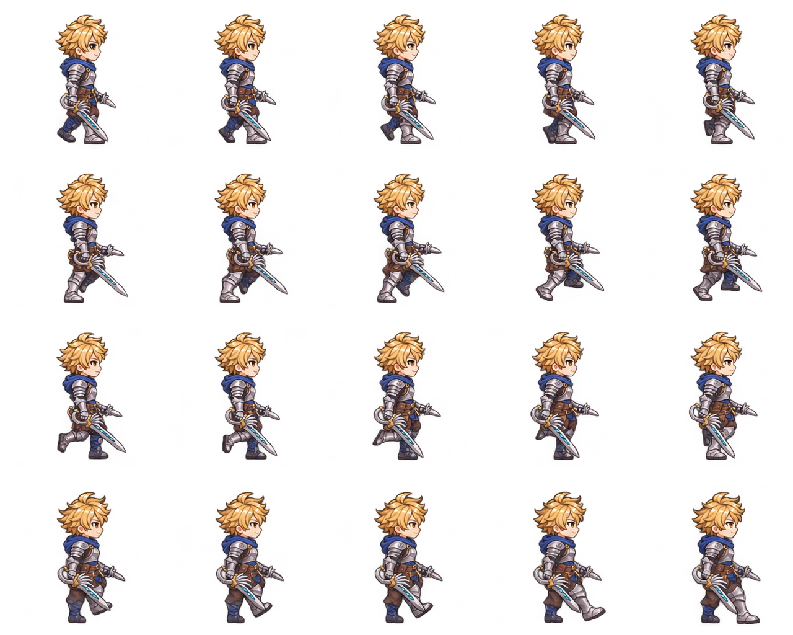

<!doctype html>
<html lang="ko">
<meta charset="utf-8">
<title>앞 구간 + 오른발 내딛기 연결 · 프레임 순서</title>
<style>
* { box-sizing: border-box; }
html, body { margin: 0; width: 1280px; background: #f1f3f7; color: #172235; font-family: 'Segoe UI', 'Malgun Gothic', sans-serif; }
header { height: 64px; padding: 14px 24px; display: flex; align-items: center; justify-content: space-between; background: #172235; color: #fff; }
h1 { margin: 0; font-size: 24px; } header span { font-size: 20px; }
main { position: relative; width: 1280px; height: 1024px; }
img { position: absolute; inset: 0; width: 1280px; height: 1024px; }
.grid { position: absolute; inset: 0; display: grid; grid-template-columns: repeat(5, 256px); grid-template-rows: repeat(4, 256px); }
.cell { border: 1px solid #cbd3df; padding: 14px; }
.cell:nth-child(16) { border: 3px solid #d07918; }
.number { display: inline-flex; align-items: center; justify-content: center; width: 48px; height: 40px; border-radius: 8px; background: #172235; color: #fff; font-weight: 700; font-size: 24px; }
</style>
<header><h1>앞 구간 + 오른발 내딛기 연결 · 20프레임 순서</h1><span>왼쪽 → 오른쪽 · 위 → 아래 · 앞 15장 → 새 9·10·11·18·30 · 15 → 16 연결</span></header>
<main><div class="grid" id="grid"></div></main>
<script>
const sourceLabels = ["앞 01","앞 02","앞 03","앞 04","앞 05","앞 09","앞 10","앞 11","앞 13","앞 14","앞 15","앞 16","앞 21","앞 22","앞 23","새 09","새 10","새 11","새 18","새 30"];
document.getElementById('grid').innerHTML = Array.from({length:20}, (_, i) => `<div class="cell"><span class="number">${String(i+1).padStart(2,'0')}</span><span style="margin-left:8px;font-size:19px;font-weight:700">${sourceLabels[i]}</span></div>`).join('');
</script>
</html>


